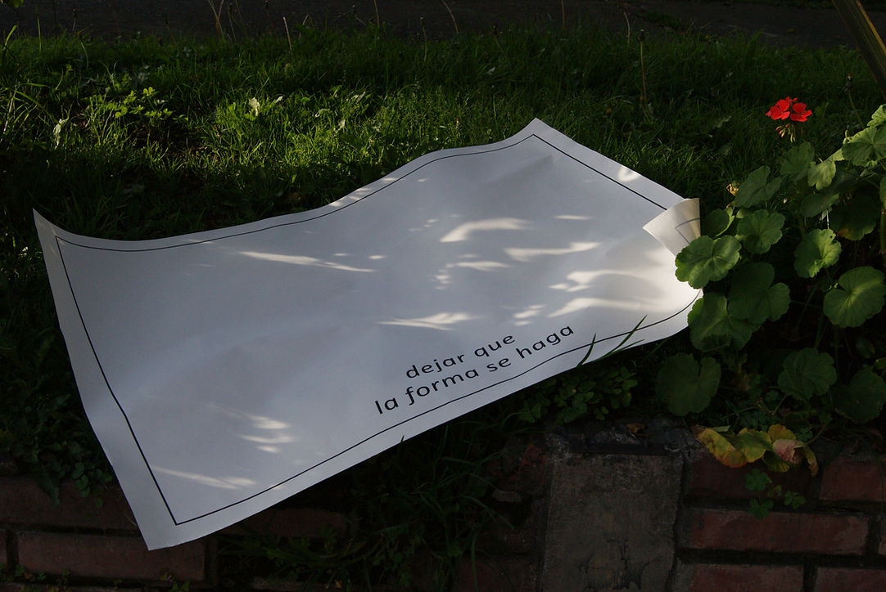
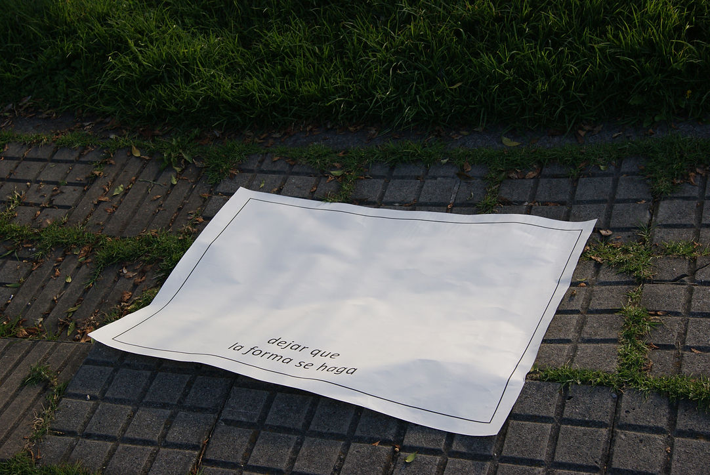
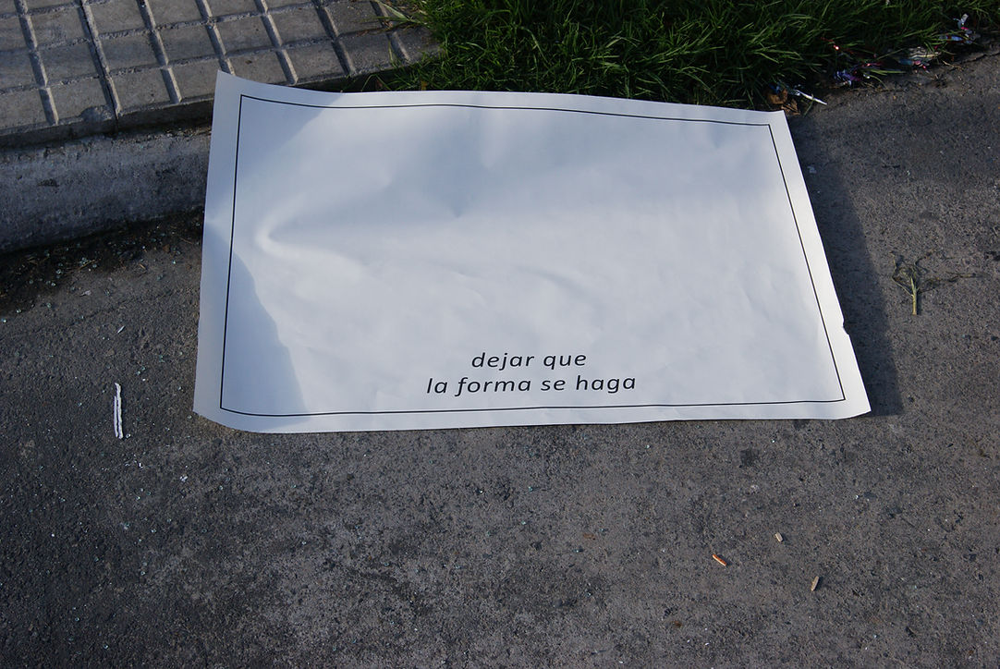

dejar que la forma se haga
Bogotá, 2020.
Este trabajo consiste en el registro de una acción que sugiere la palabra como un elemento del paisaje en el espacio público. Una hoja de gran formato (pliego) dibuja en su interior un delgado margen negro; en él se lee dejar que la forma se haga.
El papel dejando que sea afectado por el ambiente, tocando el suelo, un muro, un andén y así va adoptando diferentes formas.
Es un día soleado, la sombra, a través de las ramas y las hojas de un árbol, proyecta un contorno difuso; las grietas y el desnivel del piso producen el mismo efecto sobre la hoja; es un rumor urbano, un objeto abandonado.



Dejar que la forma se haga. serie de 3 fotografías. Fotografía digital. 2018.